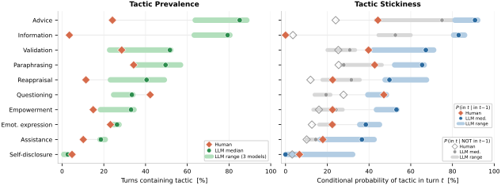
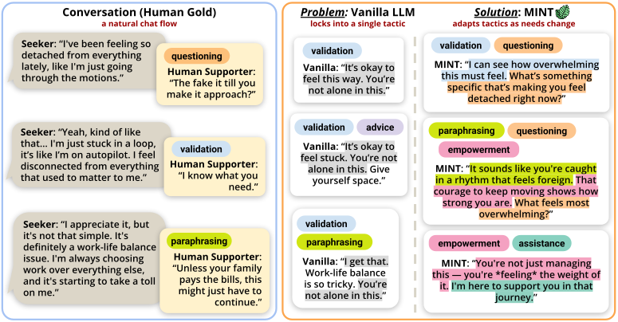
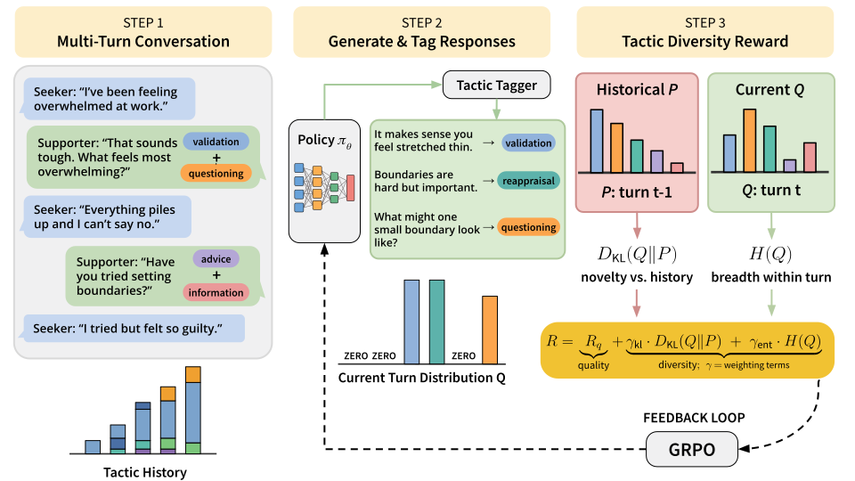

Discourse Diversity in Multi-Turn Empathic Dialogue
LLMs produce empathic responses in single turns, but lock into the same discourse moves across a conversation. We introduce MINT, the first RL framework to optimize discourse move diversity in multi-turn empathic dialogue.
Overview
LLMs are perceived as empathic in single turns, but what happens over the course of a conversation? We find that LLMs lock into the same discourse moves turn after turn: if a model validates your feelings in one turn, it is nearly twice as likely as a human to validate again in the next. We call this phenomenon tactic stickiness, and show that it is significantly associated with lower user willingness to re-engage.
To address this, we introduce MINT (Multi-turn Inter-tactic Novelty Training), the first reinforcement learning framework that directly optimizes discourse move diversity in multi-turn empathic dialogue. MINT rewards both empathy quality and cross-turn variation in discourse moves, what the response does for the listener, not just what it says. Trained with GRPO on Qwen3-1.7B and Qwen3-4B, MINT improves aggregate empathy by 25% while reducing tactic stickiness by 26% on the 4B model.
Contributions
- A vocabulary of 10 empathy tactics and sentence-level taggers (Llama-3.1-8B with per-tactic LoRA adapters, avg F1 = 0.80) to detect them automatically.
- Tactic stickiness: a new multi-turn metric that captures discourse-level repetition invisible to standard metrics like BERTScore.
- MINT: an RL objective combining empathy quality, cross-turn tactic novelty (DKL), and within-turn tactic breadth (H).
- Empirical gains: higher empathy and lower stickiness across two model sizes, without cramming more tactics per turn.
Before diving into the metrics, here is a concrete example. The tactics shown (like Validation, Questioning, and Reappraisal) are defined in the glossary below.
What Does Tactic Stickiness Look Like?
The vanilla LLM repeats Paraphrasing + Validation every turn. MINT shifts its primary strategy across turns: Questioning in turn 1, Reappraisal in turn 2, Advice in turn 3, each paired with a different secondary tactic.
The Problem: Multi-Turn Repetition
Single-turn empathy is misleading
In single-turn evaluations, human raters consistently judge LLM responses as more empathic than human-written ones.
Perceived empathy scores (1–5 scale). Source: Lee, Suh, Zhan, Li, & Ong, ACII 2024.
These scores create a paradox: if LLMs already outperform humans on perceived empathy, what could possibly be missing? The answer lies in what happens beyond a single turn. Single-turn evaluations reward polished, empathic-sounding language — but they cannot capture whether a model adapts its supportive strategy as a conversation unfolds.
A vocabulary of empathy tactics
We adopt a taxonomy of 10 empathy tactics from Gueorguieva et al. (2026), synthesized from psychology literature. These tactics capture what a response does for the listener: validating feelings, asking questions, offering advice, paraphrasing concerns, and more. To detect these tactics automatically, we train sentence-level taggers using Llama-3.1-8B-Instruct with per-tactic LoRA adapters, achieving an average F1 of 0.80. The trained tagger adapters are publicly available.

Standard metrics miss the gap
Tactic stickiness measures: if a model uses validation in one turn, how likely is it to fall back to validation again next turn, instead of adapting? High stickiness = low conversational adaptability.
Why does BERTScore see no difference? BERTScore measures semantic similarity — it confirms that LLMs use the right "empathy words." But a model can change its wording while staying in the same functional loop (e.g., paraphrasing every turn with different words). Tactic stickiness captures what BERTScore misses: not what a response says, but what it does.
This has real consequences
Higher tactic stickiness is significantly associated with lower user willingness to re-engage (ρ = −0.287, p = 0.017). Discourse-level repetition erodes the supportive relationship.

MINT: Multi-turn Inter-tactic Novelty Training
To address this gap, we introduce MINT (Multi-turn Inter-tactic Novelty Training), the first RL framework that directly rewards discourse move diversity in multi-turn empathic dialogue. Optimized with GRPO (Group Relative Policy Optimization), the reward combines three signals, all min-max normalized within each rollout group:
We evaluate ablations of this reward. Our primary variant, Q+DKL, combines quality and cross-turn novelty; adding within-turn breadth (Q+DKL+H) is also explored. Results below focus on Q+DKL, which achieves the strongest trade-off.

Experimental Setup
The formulaic patterns documented above generalize across model families. We train and evaluate on Qwen3 to test whether reinforcement learning can correct this behavior in smaller, open-source models.
Models and training. We train on two base models: Qwen3-1.7B and Qwen3-4B, optimized with Group Relative Policy Optimization (GRPO). Multi-turn rollouts are constructed from the ESConv dataset, where the model generates supporter responses conditioned on real seeker turns and conversation history.
Baselines. Vanilla: the base model prompted with a supportive role instruction. PsychoCounsel: RL trained with an empathy-only reward model (trained on 36K+ counseling preference pairs) — optimizes empathy quality but has no diversity signal. R1-Zero-Div: adds a token-level diversity bonus (penalizing repeated n-grams) to test whether surface-level lexical diversity transfers to discourse-function diversity.
Evaluation. For perceived empathy, we adopt the Lend-an-Ear framework (Kumar et al., 2026): 6 dimensions rated on a 1–5 scale, evaluated per turn across 315 supporter turns from 50 conversations. An LLM judge achieves weighted Cohen’s κw = 0.58, matching expert inter-annotator agreement. For tactic diversity, we measure stickiness: the conditional probability that a tactic reappears in the next turn.
Results
MINT (Q+DKL) outperforms all baselines on aggregate empathy across both model sizes while substantially reducing tactic stickiness.
Crucially, Q+DKL achieves this with fewer tactics per turn than PsychoCounsel (5.04 vs 6.43 on 1.7B; 4.67 vs 6.58 on 4B), showing that cross-turn diversity does not require cramming more tactics into each response. Token-level diversity baselines (R1-Zero-Div) do not reduce discourse-move repetition, confirming that surface-level and discourse-function-level diversity are distinct phenomena.
| Method | Agg. Empathy ↑ | Stickiness ↓ | Tactics/Turn ↑ |
|---|---|---|---|
| Human (Gold) | 2.90 | 0.27 | 1.97 |
| Qwen3-1.7B | |||
| Vanilla | 3.60 | 0.51 | 4.49 |
| PsychoCounsel | 4.42 | 0.65 | 6.43 |
| R1-Zero-Div | 4.38 | 0.63 | 5.85 |
| MINT (Q+DKL) | 4.54 | 0.51 | 5.04 |
| Qwen3-4B | |||
| Vanilla | 3.75 | 0.57 | 4.65 |
| PsychoCounsel | 4.62 | 0.67 | 6.58 |
| R1-Zero-Div | 4.58 | 0.57 | 5.57 |
| MINT (Q+DKL) | 4.67 | 0.42 | 4.67 |
Why do humans score lower on perceived empathy? LLMs produce longer, more polished responses that raters perceive as more empathic in isolation. The key insight is that humans are far more diverse in their discourse strategies (stickiness = 0.27), which sustains the supportive relationship over multiple turns.
These results suggest that what current models lack is not empathy itself, but the ability to strategically vary their discourse moves across the arc of a conversation.
Impact and Limitations
Why discourse diversity matters. Empathic support is not a single-turn task. In real conversations — with therapists, counselors, crisis hotline workers, or even friends — the supporter adapts their strategy as the speaker's needs evolve. A good listener might validate first, then ask a probing question, then gently reframe. This variation is not random; it is responsive. MINT takes a first step toward building models that can do the same.
Limitations. MINT optimizes for diversity of discourse tactics, but the right tactic at the right moment requires contextual judgment that a reward signal alone cannot fully capture. Our evaluation uses an LLM judge for perceived empathy, which, while matching expert agreement, may not capture all dimensions of real therapeutic quality. The tactic taxonomy, while grounded in psychology literature, is one of several possible ways to categorize supportive discourse moves.
This work focuses on peer-support dialogue and is not intended as a substitute for professional mental health care.
BibTeX
@article{zhan2026discourse,
title = {Discourse Diversity in Multi-Turn
Empathic Dialogue},
author = {Zhan, Hongli and Gueorguieva, Emma S. and
Hernandez, Javier and Suh, Jina and
Ong, Desmond C. and Li, Junyi Jessy},
year = {2026},
note = {Under review}
}